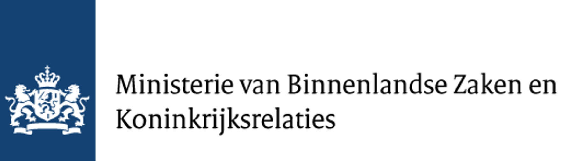

Welkom bij het Digitaal Burgerschap Dashboard, met een overzicht van 151 interventies die burgers in het Koninkrijk der Nederlanden helpen om actief en verantwoord deel te nemen aan de digitale samenleving.
Dit dashboard presenteert de resultaten van WP2: Inventarisatie van interventies op het gebied van digitaal burgerschap. We brachten in kaart op wie deze interventies zich richten, welke problemen ze aanpakken, welke vorm ze hebben en in hoeverre ze kennis, vaardigheden en gedrag bevorderen.
Digitaal burgerschap definiëren we als een aangeleerde set competenties (vaardigheden, kennis en gedrag) die burgers in staat stellen actief en verantwoord deel te nemen aan de digitale samenleving.
Klik hieronder op een thema (of gebruik het menu bovenaan) om de resultaten te bekijken. Voor achtergrondinformatie over de methode, zie Meer info rechtsboven.
